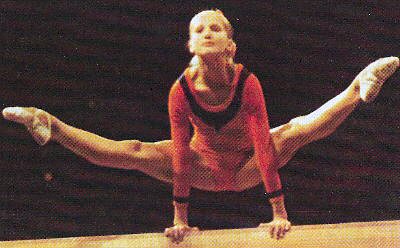

Lidia Gorbik (USSR)
1975 World Cup UB Silver Medalist

Medal Total
World Cup: 1 Silver
Lidia was born on May 21, 1959 in Baranovichi, Belarussian SSR. She was coached by Viktor Khomutov at "Trud" in Minsk. She's married to gymnast Alexander Tkachev and coaches at Dynamo Sanford in Sanford, FL.
Competition Results
1974
Jr. USSR Championships: 1st B
Riga International: 1st AA, 1st FX, 2nd V, 2nd UB
Spartakiade of the Belarussian Republic: 1st AA
USSR Championships: 4th Team, 15th AA
USSR Cup: 11th AA
1975
Jr. Friendship Tournament (Druzhba): 1st Team, 1st AA, 1st UB, 3rd B,
6th V
Moscow News: 2nd AA, 1st UB, 1st FX, 2nd V, 3rd BB
USSR Spartakiade: 4th AA, 3rd FX, 4th V, 5th UB, 6th B
World Cup: 5th AA, 2nd UB, 5th V
1976
Antibes International: 2nd AA
Champions All: 2nd AA
Cup of the White Russian Republic: 2nd AA, 1st V, 1st B, 1st FX
USSR Championships: 6th Team, 12th AA, 1st FX, 3rd UB, 5th B
USSR Cup: 6th AA
1977
Antibes International: 2nd AA, 1st B, 1st FX
This page was created on November
20, 2005 and was last updated on January 08, 2011.
© Gymn Forum